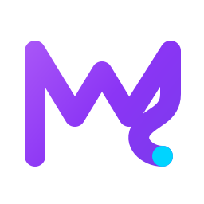
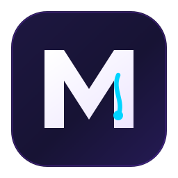

Three marks.
One language.
MSF Lang v0.1 brand concept review. Each direction is an original geometric monogram built from the letters M, S, and F — not a generic code bracket. مراجعة ثلاثة اتجاهات أصلية لهوية MSF Lang، مبنية على الحروف M وS وF ومفهوم تنفيذ الكود.
Concept 01 · Aurora الشفق
A single line
that lands.
One continuous ribbon draws the M in a single gesture. The final leg curls into an S-shaped landing, closed by a cyan execution node. The mark reads as motion, flow, and a line of code arriving at a result. خط واحد متصل يرسم حرف M ثم ينتهي بانحناءة على شكل S ونقطة تنفيذ سماوية. يجمع بين الحركة وتدفق الكود ووصوله إلى نتيجة.
Expressive and ownable at large sizes. It has a natural motion story for the website, launch film, and conference identity.
The curl cannot survive 16 px without simplification. A final version would need a dedicated small-size cut, or the curl removed at UI sizes.

248 px master mark.
Cyan marks the execution endpoint.
العلامة الرئيسية بحجم 248 بكسل.
Concept 02 · Foundry المسبك
A module
with a spark.
A solid M is carved into a deep navy module. A cyan S-trace runs inside the right leg and lands on an execution node. The result is a compact language badge: structural, reproducible, and readable at a glance. حرف M صلب داخل وحدة كحلية داكنة، مع أثر سماوي على شكل S داخل الساق اليمنى ونقطة تنفيذ. شعار مضغوط وبنيوي وواضح من النظرة الأولى.
The strongest at 16 px. It behaves like an app icon, a file badge, and a terminal glyph without a second design. The “factory module” story is built into the frame.
A badge can read as a product icon before it reads as a language. The final system needs a standalone M and a wordmark, not only the plate.

248 px master mark.
The plate is part of the mark, not a container.
اللوحة جزء من العلامة، وليست حاوية خارجية.
Concept 03 · Facet الوجه
One letter,
four planes.
The M is split into four angular planes, cut by a cyan bevel and a node in the lower valley. It treats the language as a designed object: dimensional, precise, and a little architectural. ينقسم حرف M إلى أربعة مستويات هندسية، يقطعها شطبة سماوية ونقطة في الوادي السفلي. يقدّم اللغة كشيء مصمم: مجسّم ودقيق ومعماري.
Distinctive and premium. It has the strongest launch-poster and merchandise presence, and the facets give the mark a real material quality.
The facet tones compress at small sizes, and the dark-surface silhouette needs an outline or a light-surface variant. Less immediate than Foundry at 16 px.
248 px master mark.
Four planes, one silhouette.
أربعة مستويات وهيكل واحد.
Judge them
at 16 px.
A language mark has to survive a tab, a file list, a terminal, and a package icon before it earns a launch poster. The table compares the directions on the constraints that actually decide the system. يجب أن تصمد علامة اللغة في التبويب وقائمة الملفات والطرفية وأيقونة الحزمة قبل أن تستحق ملصق إطلاق. يقارن الجدول الاتجاهات وفق القيود التي تحسم النظام فعليًا.
| Criterion | 01 · Aurora | 02 · Foundry | 03 · Facet |
|---|---|---|---|
| 16 px legibility | At riskThe curl collapses; simplify or drop it. | StrongWhite M on navy resolves immediately. | GoodSilhouette holds; facet detail drops. |
| Light and dark | GoodPurple holds on both; cyan node needs a dark field. | StrongThe plate is self-contained on any field. | GoodNeeds a light-surface palette or outline. |
| Single colour | StrongThe stroke silhouette is the mark. | MediumThe plate needs a dedicated mono cut. | StrongThe silhouette survives; facets become tone. |
| App / file icon | GoodWorks, but loses its signature at small sizes. | StrongAlready behaves like an icon. | GoodNeeds a simplified small-size cut. |
| Website / editorial | StrongThe best hero and motion mark. | GoodStrong, repeatable system mark. | StrongBest campaign and merchandise mark. |
| “Software factory” story | MediumFlow and execution, not factory. | StrongThe module is the factory. | MediumMaterial and construction, not production. |
Choose the
core mark.
The three concepts are deliberately different, not three colourways of one idea. The decision at Gate B is the core mark; the wordmark, file icon, light/dark set, and small size cut follow from it. المفاهيم الثلاثة مختلفة عمدًا، وليست ثلاثة ألوان لفكرة واحدة. قرار البوابة B هو العلامة الأساسية، ويتبعها الخط واسم اللغة وأيقونة الملف ونسختا الوضعين الفاتح والداكن والنسخة الصغيرة.
This is a static review page, not an approval form. To decide Gate B, reply in the session with one of these exact answers:
What happens after selection: final SVG marks and lockups · PNG exports at 16, 24, 32, 48, 64, 128, 256, 512, and 1024 px · a multi-size ICO · detailed and simplified file icons · light and dark variants · VS Code language and icon theme · Windows installer design · brand guidelines.
No engine code has been written. No final brand assets have been produced. No Windows registry keys have been changed. The language specification is a separate Gate A approval.
Files: the three editable concepts are in this folder as SVG. The review notes are in ../CONCEPTS.md. Brand colours are fixed; the marks are original vector drawings, not raster traces.